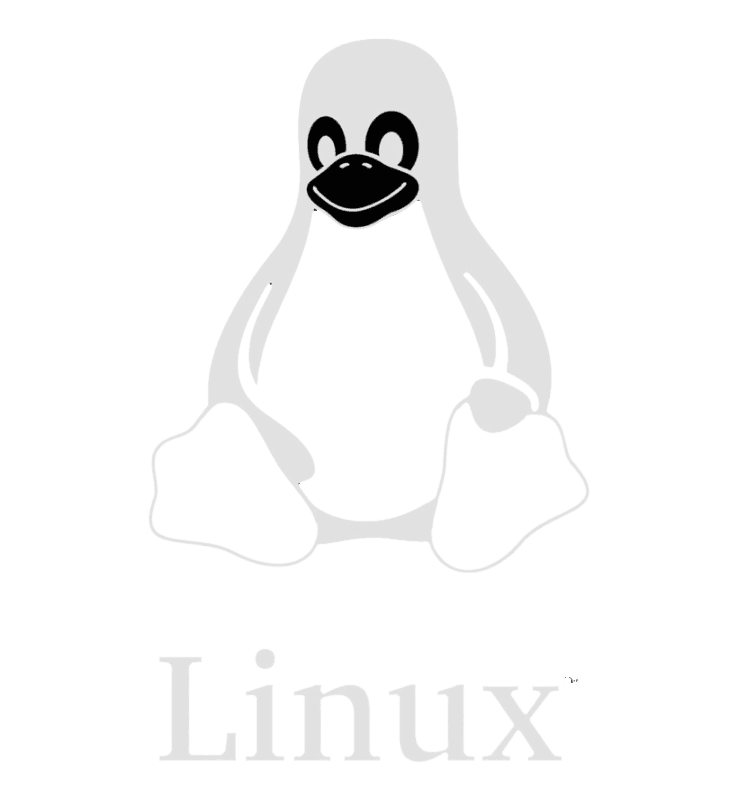
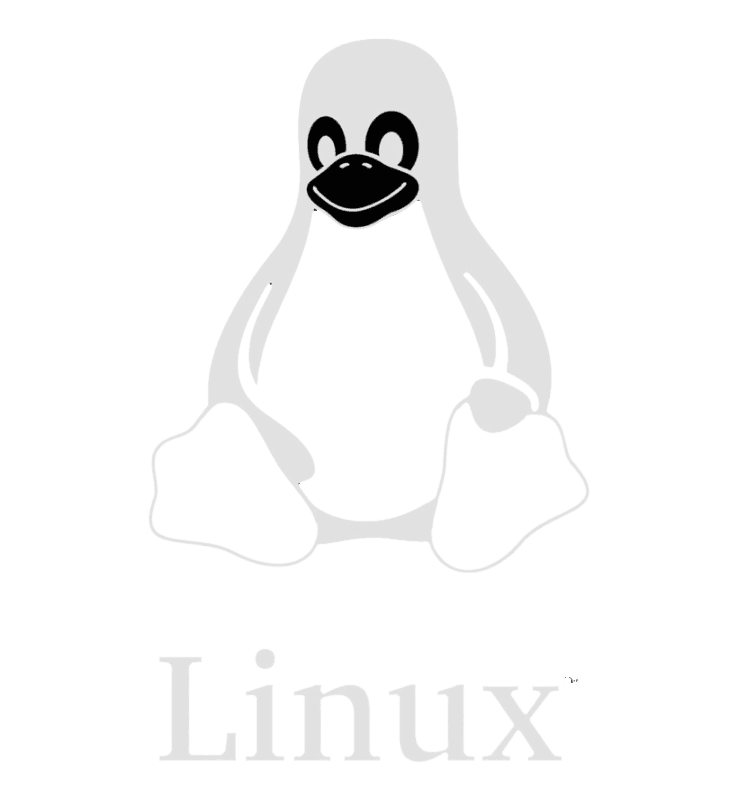
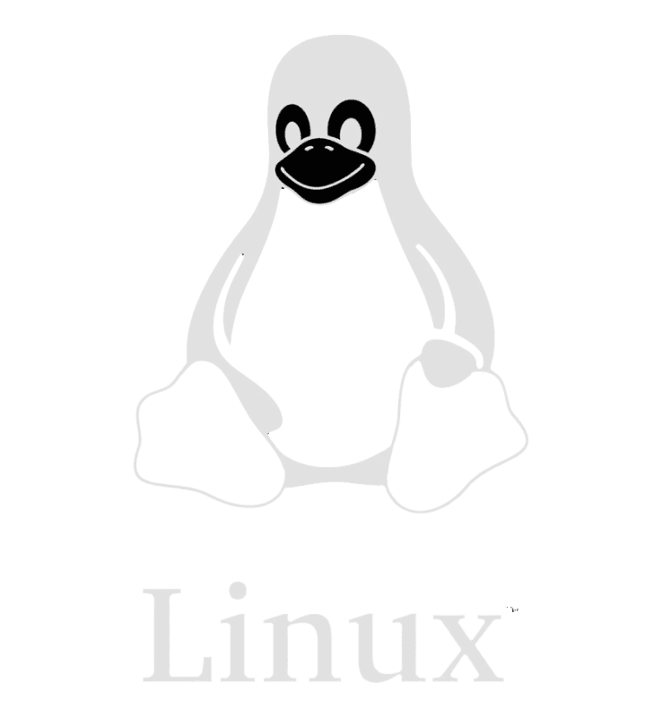
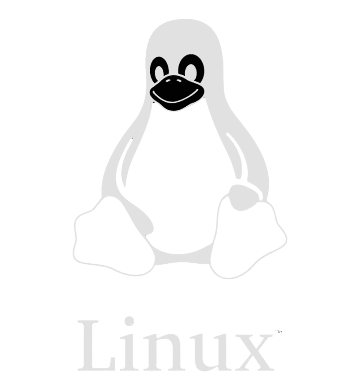
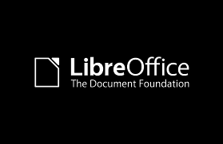
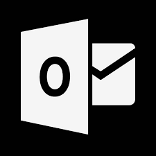

FOSS stands for Free and Open Source Software. It refers to software that users are free to use, modify, and distribute without any licensing fees or legal restrictions.
FOSS development has a rich history, dating back to the 1950s and 60s with early pioneers such as Richard Stallman and the Free Software Foundation. In the 1980s, Stallman created the GNU project, which aimed to create a completely free and open-source operating system. This led to the development of the GNU General Public License (GPL), which is one of the most widely used open-source licenses today. The term "open source" was later coined in the late 1990s to emphasize the practical benefits of free software.
FOSS alternatives to common applications include LibreOffice as an alternative to Microsoft Office, GIMP as an alternative to Adobe Photoshop, and Mozilla Firefox as an alternative to Google Chrome.
FOSS has strong ties with GNU/Linux, as many of the most popular and widely used distributions of Linux are built around free and open-source software. Linux distributions like Debian, Fedora, and Ubuntu are all examples of free and open-source software.
Some benefits of FOSS over proprietary software include increased security, transparency, flexibility, and community support. FOSS is often more secure because vulnerabilities can be identified and fixed by anyone, rather than being kept secret by a single company. FOSS is also more transparent because anyone can access and examine the source code, and it is more flexible because users can modify the software to suit their needs. Finally, FOSS is often supported by passionate and dedicated communities that can provide help, support, and documentation.
The development of FOSS has its roots in the early days of computing. In the 1950s and 1960s, most software was written by individual programmers and shared freely among the academic and research communities. This early culture of sharing laid the groundwork for the development of FOSS.
In the 1970s and 1980s, as commercial software became more prevalent, some programmers began to question the proprietary model and advocate for a more open and collaborative approach. The Free Software Foundation, founded by Richard Stallman in 1985, was one of the earliest organizations to promote the principles of FOSS. Stallman's "GNU Manifesto" called for the creation of a completely free and open source operating system, which led to the development of the GNU project.
In the 1990s, Linus Torvalds developed the Linux operating system, which was released under the GNU General Public License (GPL) and became one of the most widely used examples of FOSS. Other popular FOSS projects, such as the Apache web server, MySQL database, and the Python programming language, also emerged during this period.
Today, FOSS has become an increasingly important part of the technology landscape. Many large companies, including IBM, Google, and Red Hat, have invested in FOSS development and support, and FOSS is used in a wide range of applications, from web servers to mobile devices to cloud computing.
FOSS is often available at no cost or at a much lower cost that proprietary software. This can be especially important for individals, small businesses, or organizations with limited budgets.
FOSS allows user to customize the software to their needs and modify the code to suit their specific requirements. This is in contrast to proprietary software, which is often closed-source and may not allow for customisation.
FOSS is often more secure than proprietary software because its source code is available for inspection by anyone, allowing security vulnerabilities to be identified and addressed quickly. In contrast, proprietary software often relies on security through obscurity, which can be less effective.
FOSS projects are often developed by a community of contributors who share knowledge and work collaboratively to improve the software. This can lead to a greater sense of community and more rapid development of new features.
FOSS often promotes standards-based interoperability, which means that it can work wellwith other software and systems. This can be especially important in complex computing environments.
FOSS software is often built to last, and projects may be maintained for many years or even decades.This means that users can be assured that the software will continue to be available and supported in the long term.
FOSS is often built on the principles of freedom, sharing, and community, which can be appealing to userswho value these ideals.
Linux
If you want to commit to going completely open-source, then try replacing your operating system with Linux. Linux is entirely free, open-source, and has thousands of distributions to choose from, so you can find the one that fits you perfectly. Some Linux distributions are even designed for former Windows users. A good starting point with Linux is Ubuntu, as it's widely supported and easy to use.
Libreoffice
A Foss alternative to Microsoft office, libreoffice is a full-featured office productivity suite that includes word processing, spreadsheet, among other tools.
 GIMP
An alternative to Adobe Photoshop, GIMP is a free and open-source image editing program that can be used for a variety of tasks such as photo retouching, image composition, and graphic design.
Firefox
An alternative to Google Chrome, Firefox is a free and open-source web browser that is fast, secure, and customizable.

Thunderbird
An alternative to Microsoft Outlook, Thunderbird is a free and open-source email client that can be used to manage email, contacts, and calendars.
Free and Open-Source Software (FOSS) is closely tied to the GNU/Linux operating system. Linux is a free and open-source operating system kernel that was first released in 1991 by Linus Torvalds. The kernel is a critical component of the operating system that provides low-level system services such as hardware device management, process management and memory management.
In the early days of Linux, the operating system lacked many of the user-level tools and applications that are necessary for a complete computing environment. This is where the GNU Project comes in. The GNU Project was founded by Richard Stallman in 1983 with the goal of creating a complete, free, and open-source Unix-like operating system.The GNU Project provided many of the tools and applications that are necessary for a complete computing environment, such as the GNU Compiler Collection (GCC) the GNU C Library (glibc), and the bash shell.
When combined with the Linux kernel, these GNU tools and applications form a complete, free, and open-source operating system that is commonly known as GNU/Linux. The combination of the Linux kernel and the GNU tools and applications is often referred to as the GNU/Linux operating system.
Today, GNU/Linux is a popular operating system that is widely used in a range of applications, including web servers, supercomputers, and embedded devices. The close tie between GNU and Linux has helped to promote the development of FOSS, and has led to the creation of a large and vibrant community of developers and users who work together to create and maintain high-quality, free, and pen-source software.